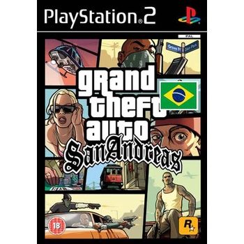
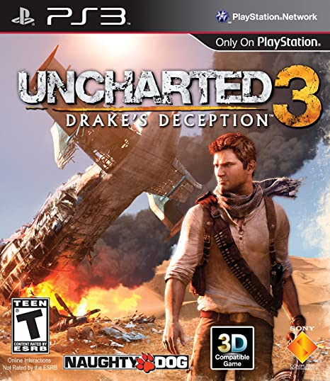
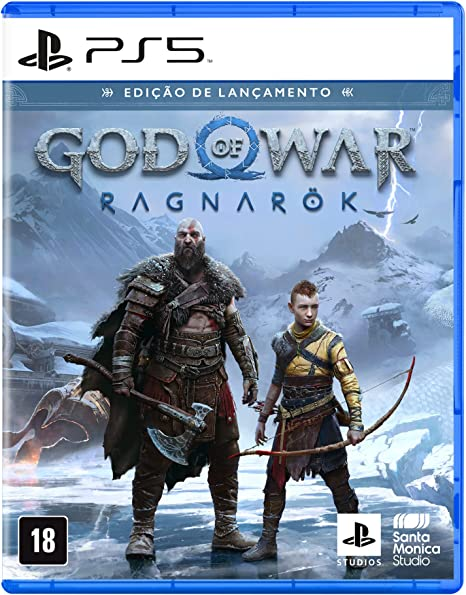

Abaixo veremos alguns jogos, alguns mais antigos e outros lançamentos do momento, entre eles, alguns bem famosos e com grandes premiações, links para os trailers serão disponibilizados abaixo das imagens.
Crash Bandicoot (PSone)

A história de Crash Bandicoot gira em torno de Crash, um antropomorfo criado em laboratório, em busca de reverter o estrago causado ao meio ambiente por seus criadores, Neo Cortex e Nitrus Brio, e impedí-los de atingir a dominação mundial.
Clique aqui para assistir o trailer do gameGta San Andreas (PS2)
Há cinco anos, Carl Johnson fugiu da pressão da vida em Los Santos, San Andreas, uma cidade sendo destruída por problemas com gangues, drogas e corrupção. Onde estrelas de cinema e milionários fazem o melhor que podem para evitar traficantes e bandidos. É começo dos anos 90. Carl volta para casa.
Clique aqui para assistir o trailer do gameUncharted 3 (PS3)
É o terceiro título principal da série Uncharted e foi lançado exclusivamente para PlayStation 3 em novembro de 2011. Na história, os jogadores controlam Nathan Drake, um caçador de tesouros que se une a seu mentor Victor Sullivan com o objetivo de procurar a cidade perdida de Iram dos Pilares.
Clique aqui para assistir o trailer do gameThe last of Us part II (PS4)

O objetivo de Abby de matar Joel foi alimentado por seu desejo de retornar a um mundo antes da morte de seu pai, mas ela descobre que é impossível. Depois de testemunhar a batalha de Owen, ela encontra seu próprio propósito em proteger Yara e Lev, refletindo o arco de redenção de Joel no primeiro jogo.
Clique aqui para assistir o trailer do gameGod of War Ragnarok (PS5)
O jogo vai se passar três anos após os eventos de God of War, visto que o Fimbulwinter, o inverno nórdico que precede o Ragnarok chegou. Resta aguardar para ver quais perigos aguardam os protagonistas e como esse capítulo vai encerrar a cronologia de God of War.
Clique aqui para assistir o trailer do game